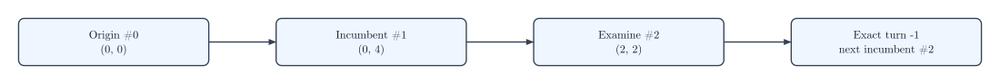
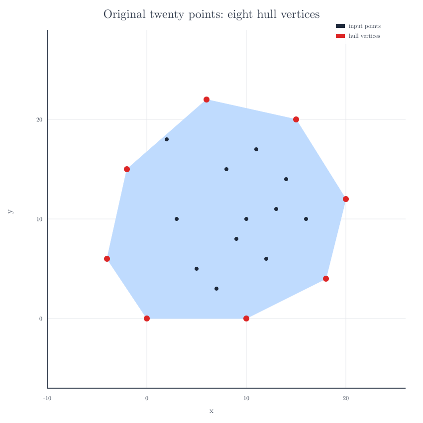
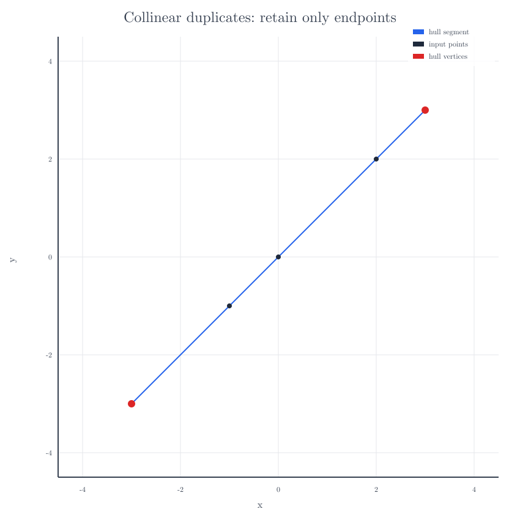
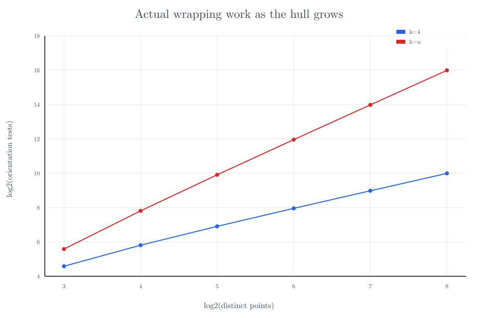

Jarvis march: choose one supporting edge at a time
Abstract
Gift wrapping scans the cloud once for each hull vertex. We start with an actual candidate replacement, retain the original twenty-point example, and distinguish wrapping work from sorting overhead. Exact orientation signs and a same-ray ordering rule handle finite binary64 coordinates without rounded distance overflow. Owned native histories expose the producing decisions. Degenerate controls and deterministic hull-size families make the limits visible.
Watch one candidate change
In the five-point square below, the first candidate is the upper-left corner. The centre temporarily replaces it, before the lower-right corner wins. An intermediate incumbent need not be a hull vertex. The diagram shows the operands and outcome of the first actual test; its arrows describe evaluation flow, not geometric edges. Sorted indices and original input rows are different identities.
#include <dm/dm.hpp>
int main() {
std::filesystem::create_directories("build");
const auto t =
dm::geometry::jarvis_march_trace({{0, 0}, {4, 0}, {4, 4}, {0, 4}, {2, 2}});
std::print("| sorted index | original row | x | y |\n| ---: | ---: | ---: | ---: |\n");
for (std::size_t i = 0; i < t.sorted.size(); ++i) {
const auto &p = t.sorted[i];
std::print("| {} | {} | {} | {} |\n", i, p.input_index, p.point.x,
p.point.y);
}
std::print("\n| first edge test | incumbent before | examined | exact sign | incumbent after |\n| ---: " "| ---: | ---: | ---: | ---: |\n");
for (std::size_t i = 0; i < t.events.size(); ++i) {
const auto &e = t.events[i];
if (e.step == 0 && e.action == dm::geometry::JarvisAction::Test)
std::print("| {} | {} | {} | {} | {} |\n", i, e.before, e.examined,
e.turn, e.after);
}
std::print("\nThe complete run returns {} vertices after {} orientation tests and {} actual events.\n",
t.analysis.hull.size(), t.analysis.work.orientation_tests,
t.events.size());
dm::geometry::jarvis_candidate_diagram(t).save_svg("build/jarvis_candidate.svg");
}| sorted index | original row | x | y |
|---|---|---|---|
| 0 | 0 | 0 | 0 |
| 1 | 3 | 0 | 4 |
| 2 | 4 | 2 | 2 |
| 3 | 1 | 4 | 0 |
| 4 | 2 | 4 | 4 |
| first edge test | incumbent before | examined | exact sign | incumbent after |
|---|---|---|---|---|
| 1 | 1 | 2 | -1 | 2 |
| 2 | 2 | 3 | -1 | 3 |
| 3 | 3 | 4 | 1 | 3 |
The complete run returns 4 vertices after 12 orientation tests and 20 actual events.

From orientation to a supporting edge
For origin a, incumbent b and examined point q, the predicate is the sign of
A negative sign replaces b with q. A zero sign keeps the farther point. At a hull vertex, collinear alternatives lie on the same ray: opposite rays would put the vertex inside their segment. Lexicographic sorted order is monotone along that ray, so the implementation selects the farther sorted index without squaring a distance. The predicate returns an exact sign of the represented finite binary64 coordinates; it does not interpret noisy measurements with a tolerance. Subtraction and multiplication in ordinary double arithmetic would not give this guarantee.
Each completed scan leaves every point on or to the left of the selected directed edge. Starting at the lexicographic minimum, this supporting-edge invariant advances counterclockwise through strict extreme points until returning to the start. Farthest selection excludes intermediate collinear points. The returned hull is unclosed; an all-collinear cloud returns its two extremes.
Retain the original twenty points
The fixture retains all original coordinates and input order. The figure uses equal coordinate scales and draws the actual result without recomputing another hull. The table exposes the earliest original row for each selected vertex.
#include <dm/dm.hpp>
int main() {
std::filesystem::create_directories("build");
const auto points = dm::geometry::jarvis_demo_points();
const auto a = dm::geometry::jarvis_march_analyze(points);
std::print("| vertex | original row | x | y |\n| ---: | ---: | ---: | ---: |\n");
for (std::size_t i = 0; i < a.hull.size(); ++i)
std::print("| {} | {} | {} | {} |\n", i, a.input_indices[i],
a.hull[i].x, a.hull[i].y);
std::print("\n| input rows | distinct points | hull vertices | orientations | sort comparisons | " "duplicate checks |\n| ---: | ---: | ---: | ---: | ---: | ---: |\n| {} | {} | {} | {} | {} | " "{} |\n",
points.size(), a.work.distinct_points, a.hull.size(),
a.work.orientation_tests, a.work.sort_comparisons,
a.work.duplicate_comparisons);
if (a.hull.size() != 8 || a.work.orientation_tests != 144)
throw std::runtime_error("original fixture");
dm::geometry::jarvis_hull_plot(points, a).title("Original twenty points: eight hull vertices").save_svg("build/jarvis_cloud.svg");
}| vertex | original row | x | y |
|---|---|---|---|
| 0 | 7 | -4 | 6 |
| 1 | 0 | 0 | 0 |
| 2 | 1 | 10 | 0 |
| 3 | 2 | 18 | 4 |
| 4 | 3 | 20 | 12 |
| 5 | 4 | 15 | 20 |
| 6 | 5 | 6 | 22 |
| 7 | 6 | -2 | 15 |
| input rows | distinct points | hull vertices | orientations | sort comparisons | duplicate checks |
|---|---|---|---|---|---|
| 20 | 20 | 8 | 144 | 85 | 19 |

Degeneracy is part of the contract
Exact coordinate equality coalesces duplicates and signed zeros, retaining the earliest source representation. Empty, singleton and two-distinct inputs use a sorted shortcut with no wrapping events. Nonfinite coordinates are rejected. The subnormal line demonstrates a corrected legacy failure: rounded squared distances underflowed and kept interior vertices; the exact kernel returns just the endpoints. Extreme finite coordinates are accepted by the hull kernel even when a padded plotting span cannot be represented. Only the ordinary collinear control is drawn here.
#include <dm/dm.hpp>
int main() {
std::filesystem::create_directories("build");
using P = dm::geometry::Point2D;
const double d =
std::numeric_limits<double>::denorm_min(), m =
std::numeric_limits<double>::max();
const std::vector<std::pair<const char *, std::vector<P>> > cases = {
{"empty", {}}, {"singleton", {{2, 3}}},
{"two distinct", {{1, 1}, {0, 0}, {1, 1}}},
{"collinear duplicates",
{{-3, -3}, {-1, -1}, {0, 0}, {2, 2}, {3, 3}, {3, 3}}},
{"subnormal triangle", {{0, 0}, {d, 0}, {0, d}}},
{"subnormal line", {{0, 0}, {d, d}, {2 * d, 2 * d}, {3 * d, 3 * d}}},
{"finite extremes", {{-m, -m}, {m, -m}, {m, m}, {-m, m}, {0, 0}}}
};
std::print("| control | input | distinct | hull | orientations | events |\n| --- | ---: | ---: | ---: | " "---: | ---: |\n");
for (const auto & [name, p] : cases) {
const auto t = dm::geometry::jarvis_march_trace(p);
std::print("| {} | {} | {} | {} | {} | {} |\n", name, p.size(),
t.sorted.size(), t.analysis.hull.size(),
t.analysis.work.orientation_tests, t.events.size());
}
const std::vector<P> tri = {{0, 0}, {2, 0}, {0, 2}};
bool capped = false, invalid = false, overflow = false;
long long count = std::numeric_limits<long long>::max();
try {
(void) dm::geometry::jarvis_march_trace(tri, {3, 8});
} catch (const std::length_error &) {
capped = true;
}
try {
(void) dm::geometry::jarvis_march({{0, 0},
{m,
std::numeric_limits<double>::infinity()}});
} catch (const std::invalid_argument &) {
invalid = true;
}
try {
(void) dm::geometry::jarvis_march(tri, count);
} catch (const std::overflow_error &) {
overflow = true;
}
if (!capped || !invalid || !overflow ||
count != std::numeric_limits<long long>::max())
throw std::runtime_error("guards");
std::print("\nEight events reject the nine-event triangle; nonfinite input rejects; overflowing legacy " "counter stays unchanged.\n");
const auto &p = cases[3].second;
dm::geometry::jarvis_hull_plot(p, dm::geometry::jarvis_march_analyze(p)).title("Collinear duplicates: retain only endpoints").save_svg("build/jarvis_controls.svg");
}| control | input | distinct | hull | orientations | events |
|---|---|---|---|---|---|
| empty | 0 | 0 | 0 | 0 | 0 |
| singleton | 1 | 1 | 1 | 0 | 0 |
| two distinct | 3 | 2 | 2 | 0 | 0 |
| collinear duplicates | 6 | 5 | 2 | 6 | 10 |
| subnormal triangle | 3 | 3 | 3 | 3 | 9 |
| subnormal line | 4 | 4 | 2 | 4 | 8 |
| finite extremes | 5 | 5 | 4 | 12 | 20 |
Eight events reject the nine-event triangle; nonfinite input rejects; overflowing legacy counter stays unchanged.

Count the scan, then account for preparation
With u distinct points and h hull vertices, each edge tests every point except its origin and initial seed. For u at least three, the actual orientation count is h(u−2), with h starts and h selections: hu trace events. The small-input shortcuts are separate. The complete implementation sorts n original records and removes adjacent duplicates, so its bound is O(n log n + uh), with O(n) preparation storage. Calling the wrapper output-sensitive describes its wrapping phase; a small hull does not remove sorting overhead. Trace storage adds O(uh). Counts are logical operations, not timings or byte-level memory traffic.
The four-corner family adds strict interior points. The second family uses (i,i²); every point is extreme because its tangent y=2ix−i² leaves every other point strictly above by (j−i)². These controls isolate h=4 from h=u without random sampling. Plot coordinates are explicitly base-two logarithms of the measured counts.
#include <dm/dm.hpp>
int main() {
std::filesystem::create_directories("build");
std::vector<double> x, small, full;
std::print("| distinct u | h=4 tests | h=u tests | box sort | parabola sort |\n| ---: | ---: | ---: | " "---: | ---: |\n");
for (std::size_t n = 8; n <= 256; n *= 2) {
const auto a =
dm::geometry::jarvis_march_analyze(dm::geometry::jarvis_control_points(n));
const auto b =
dm::geometry::jarvis_march_analyze(dm::geometry::jarvis_control_points(n, true));
if (a.work.orientation_tests != 4 * (n - 2) ||
b.work.orientation_tests != n * (n - 2))
throw std::runtime_error("work identity");
std::print("| {} | {} | {} | {} | {} |\n", n, a.work.orientation_tests,
b.work.orientation_tests, a.work.sort_comparisons,
b.work.sort_comparisons);
x.push_back(std::log2(n));
small.push_back(std::log2(a.work.orientation_tests));
full.push_back(std::log2(b.work.orientation_tests));
}
auto p = dm::graphics::RPlot::create();
p.line(x, small, "h=4", {37, 99, 235}, 2).points(x, small, "",
{37, 99, 235}, 4).line(
x, full, "h=u", {220, 38, 38}, 2).points(x, full, "", {220, 38, 38}, 4).title("Actual wrapping work as the hull grows").x_label("log2(distinct points)").y_label("log2(orientation tests)").y_limits(4, 18).save_svg("build/jarvis_work.svg");
}| distinct u | h=4 tests | h=u tests | box sort | parabola sort |
|---|---|---|---|---|
| 8 | 24 | 48 | 24 | 14 |
| 16 | 56 | 224 | 56 | 30 |
| 32 | 120 | 960 | 166 | 101 |
| 64 | 248 | 3968 | 557 | 307 |
| 128 | 504 | 16128 | 1718 | 797 |
| 256 | 1016 | 65024 | 4620 | 1967 |

Ownership, limits and evidence
Analyze and trace borrow input during execution and return owned results. Default limits admit one million original points and one million actual events; zero disables the corresponding optional ceiling. Complete point admission precedes indexed allocation, while each event is admitted before its operation. Failure throws rather than returning a partial history. Untraced analysis ignores the event limit. These ceilings count records, not allocation capacity or peak RAM. The legacy by-value interface copies its argument at the call boundary; its signed counter changes only after successful completion and checked addition.
Fourteen targeted native tests cover ordinary and degenerate hulls, identities, actual state transitions and guards. An independent rational oracle checks 1,834 clouds, 251,230 actual events and 231,412 orientation tests, including 300 full-exponent finite-coordinate clouds. A frozen legacy comparison preserves hulls, counts and 1,293,757 scan operand triples on 5,001 ordinary inputs, while documenting the subnormal-line correction. These checks establish the tested contracts rather than a performance comparison with other hull algorithms. No external dataset is needed for these geometric examples.
Reference
R. A. Jarvis (1973), “On the identification of the convex hull of a finite set of points in the plane”, Information Processing Letters 2(1), 18–21, doi:10.1016/0020-0190(73)90020-3. This report uses sorted deduplication and exact represented-coordinate signs; its preparation and counted scan are specified above.